Bilder der Pfarrkirche
Unser neues Pfarrzentrum entsteht
Danube Guitar Duo
Ein anspruchsvolles Konzert des Danube Guitar Duos erlebten die Zuschauer im neuen Pfarrzentr(a)um. Die Darbietungen und der ansprechende Rahmen begeisterten alle Anwesenden.
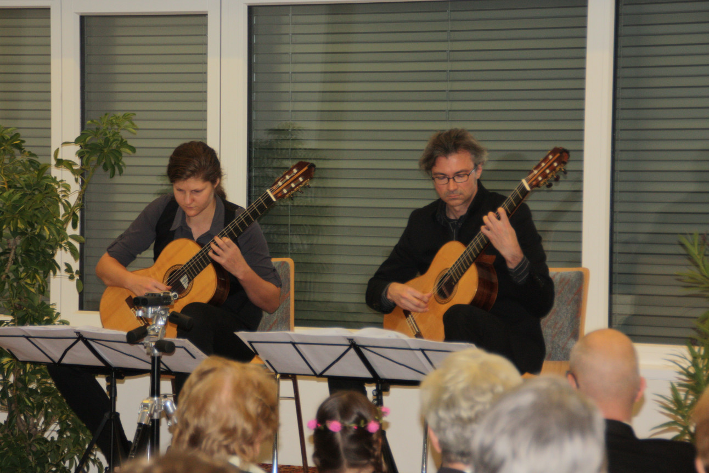
Kräuterpfarrer
Der Kräuterpfarrer Benedikt Felsinger hielt vor interessiertem Publikum im vollen Saal des Pfarrzentr(a)ums einen sehr informativen Vortrag über Heilkräuter und deren Anwendungen. Sein letztes Werk „Für Leib und Seele“ gab es zu erwerben, die Gärtnerei Müller rundete das Programm mit einem vielfältigen Pflanzenangebot ab.
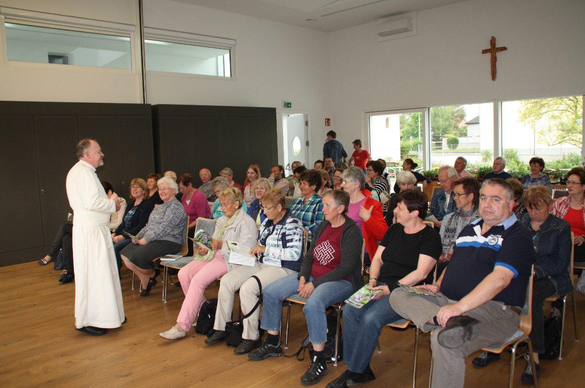 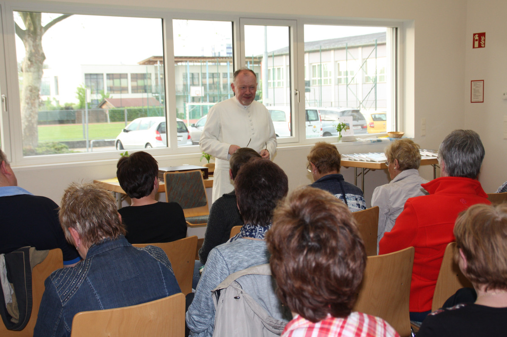
Frühstück nach der Rorate
Adventkranz 2015
Erstkommunion 2015
37 Kinder aus der Volksschule Wagram und
der Mary Ward Volksschule feierten am 26. April ihre Erstkommunion. Es war
ein wunderschönes Fest, das sicher allen lange in Erinnerung bleiben wird!
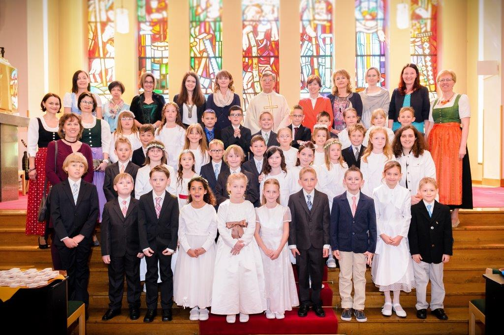
Sternsinger 2015
Ministrantenaufnahme 2014
Erntedank
Erntedank 2013
Am Sonntag, 6. Oktober 2013, wurde Erntedank gefeiert. Die Erntegaben wurden am Kirchenplatz gesegnet, die musikalische Umrahmung der Messe gestaltete die Orff-Gruppe. Nach dem Gottesdienst führte die Runde 2000 zugunsten des neuen Pfarrzentrums ein Maronibraten mit Sturmausschank durch. Die Maroni wurden von Stadtrat Peter Krammer gespendet, somit gab es einen Reinerlös von 503,65 Euro für das Bauvorhaben.
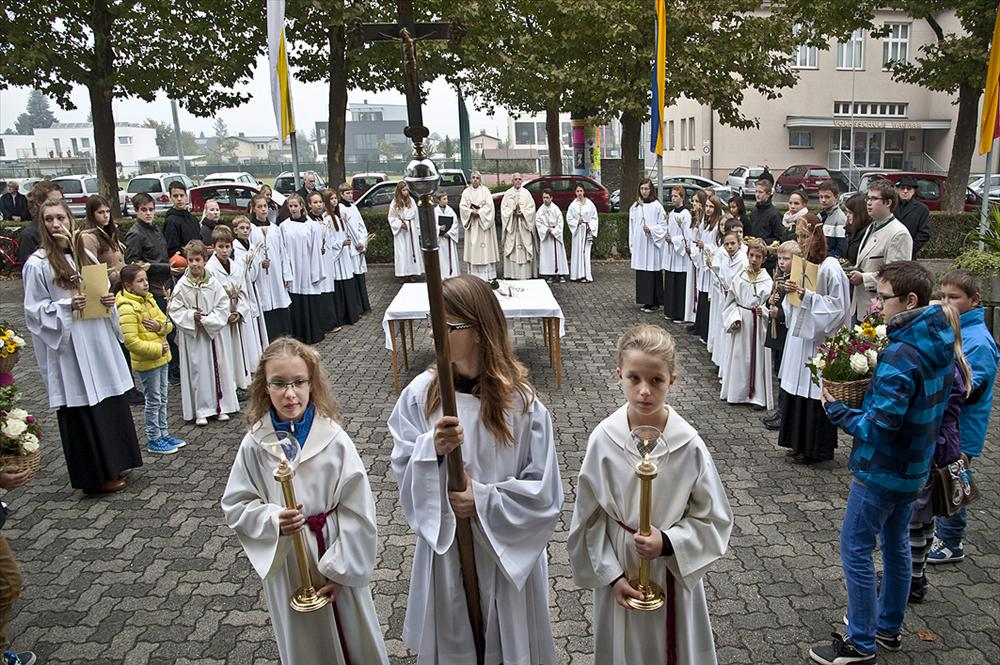
75 Jahre Pfarrkirche St. Michael
Am Sonntag, 29. September 2013 feierten wir ein besonderes Jubiläum: 75 Jahre Pfarrkirche St. Michael. Bereits nach etwas mehr als einem Jahr (Spatenstich 9. August 1937) wurde am 9. Oktober 1938 die Kirche durch Diözesanbischof Michael Memelauer geweiht.
Nachdem das Pfarrhaus fertiggestellt war, wurde mit 1. 1. 1940 die St. Michaelskirche zur Pfarrkirche erklärt und Domkurat Silvester Kurz zum ersten Pfarrer bestellt. Sein Nachfolger wurde 1972 Domkurat Karl Permoser. Er ging mit
1. 9. 2010 in Pension. Ein Pfarrverbund Stattersdorf-Harland-Wagram wurde gebildet, Dechant Ernst Bergmann wurde Titularpfarrer von Wagram, Diakon Gottfried Steger Pfarrkoordinator.
Die Festmesse wurde musikalisch umrahmt durch Kirchenchor Wagram mit Orchester, aufgeführt wurde die Krönungsmesse von W. A. Mozart.
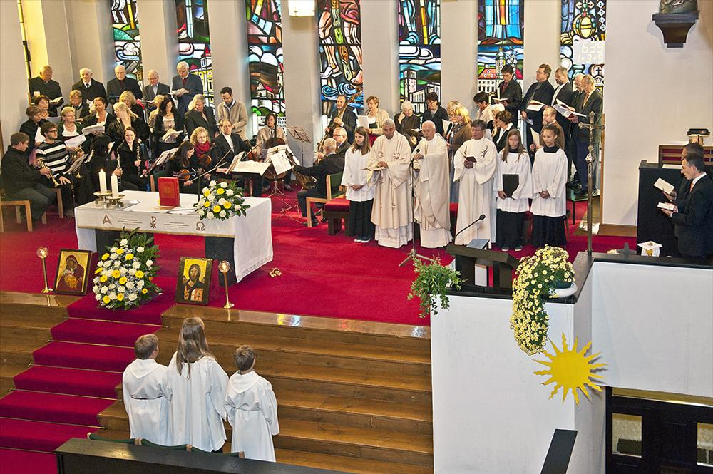
Goldene Priesterweihe von Pfarrer i. R. Karl Permoser
Am Sonntag, 23. Juni 2013, feierte Pfarrer
i. R. Karl Permoser mit der Pfarrgemeinde und vielen Gästen sein Fest der Goldenen Priesterweihe. Diakon Gottfried Steger hob besonders das soziale Engagement hervor: in den siebziger Jahren wurde ein vietnamesisches Paar (Boatpeople) aufgenommen und in den neunziger Jahren konnten 100 Flüchtlinge aus Bosnien aufgenommen und über mehrere Jahre betreut werden. Ein weiterer Schwerpunkt ist die Kirchenmusik. Als Domkurat und später als Pfarrer von Wagram gründete und betreute er einen Kinderchor. Dechant Ernst Bergmann hob seine Leistungen im Dekanat St. Pölten hervor. Stadtrat Rankl gratulierte im Namen des Bürgermeisters.
Eine besondere überraschung für den Jubilar war die Gratulation von 50 Täuflingen (einer für jedes Jahr seines priesterlichen Wirkens). Die Pfarrgemeinde stellte sich mit Bausteinen für das geplante neue Pfarrzentrum im Wert von 30.000 Euro ein. Anschließend lud der Jubilar zu einer Agape ein.
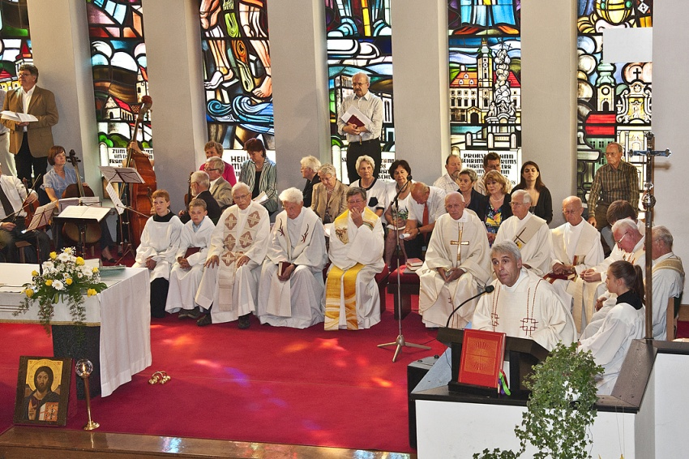
Pfarrfest 2013
Am Sonntag, 9. Juni 2013, wurde vor der Pfarrrkirche das jährliche Pfarrfest gefeiert. Der Kirchenplatz war gesteckt voll mit Menschen in Feierlaune. Alle freuten sich über das schöne Wetter, Essen und Trinken, die gespendeten Mehlspeisen und das gute Miteinander.
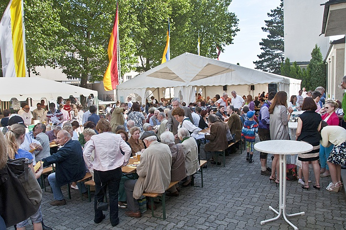
Lange Nacht der Kirche 2013
Im Rahmen der "Langen Nacht der Kirchen" führten Sie am 24. Mai 2013 "1000 Lichter in unserer Kirche durch Ihre Lebensstationen".
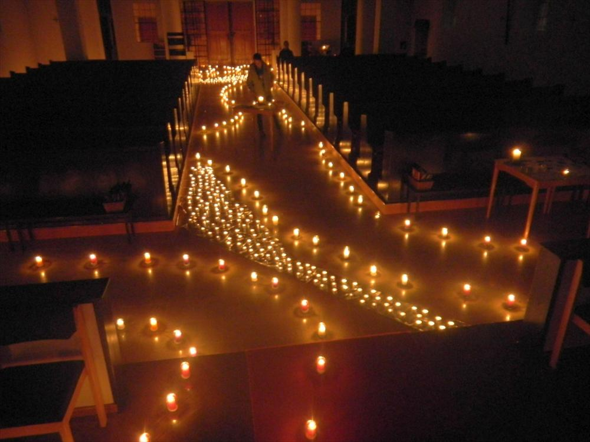
Sternsingen 2013
Im Pfarrgebiet waren vom 2. bis 4. Jänner 2013 drei Tage lang 31 Sternsinger unterwegs. Bei der Heiligen Messe zu Dreikönig wurde dann das Sammelergebnis von € 10.356,29 bekannt gegeben und den fleißigen Wagramer Sternsingern und ihren Begleitern für ihre freiwillige Tätigkeit und die kilometerlange Tour gedankt.
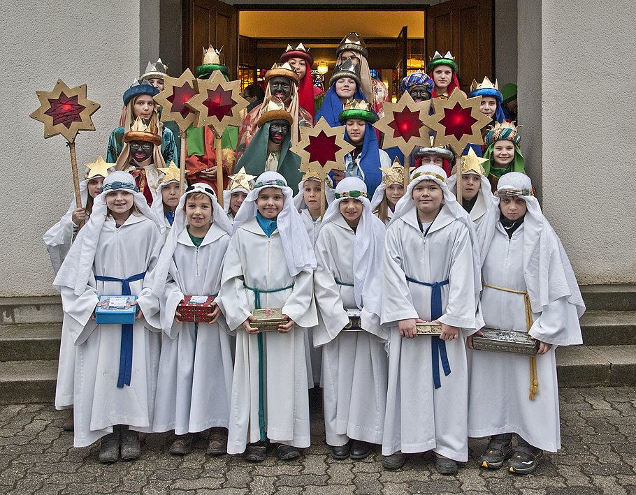
Silvestertag 2012
Am Silvestertag feierten wir anlässlich des Jahreswechsels einen Dankgottesdienst als Lateinisches Hochamt. Der Kirchenchor sang die „Missa brevis“ in D-Dur von W. A. Mozart.
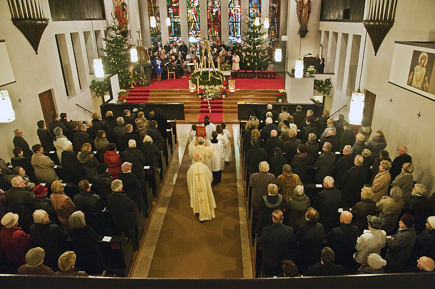
Ministrantenaufnahme 2012
Aufnahme der 10 neuen MinistrantInnen am 28. Oktober 2012
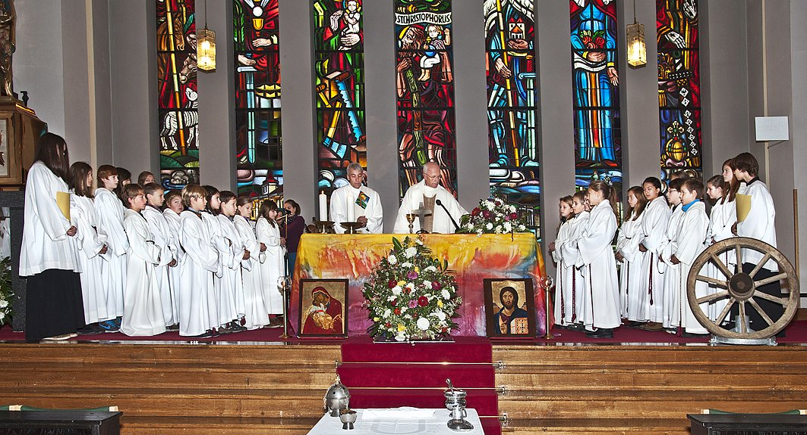
Michaelfest und erster Kirtag
Fest zu Ehren unseres Kirchen- und Pfarrpatrons und erster Michaelskirtag vom 30. September 2012
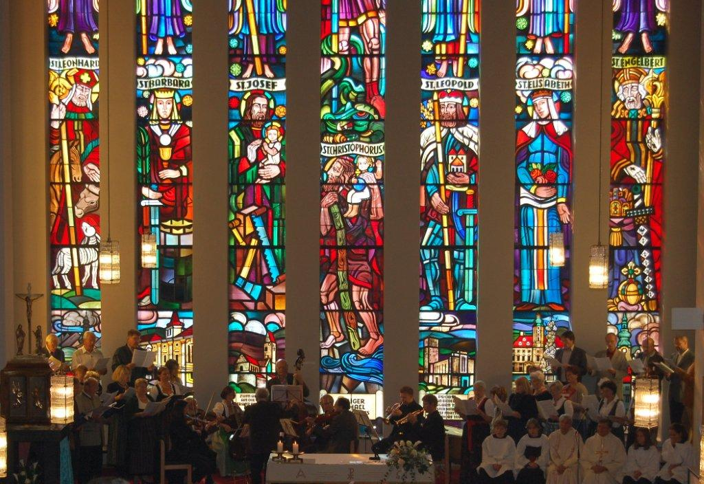
Erntedank und Dankgottesdienst
Karl Permoser - 38 Jahre Pfarrer von St.Pölten Wagram
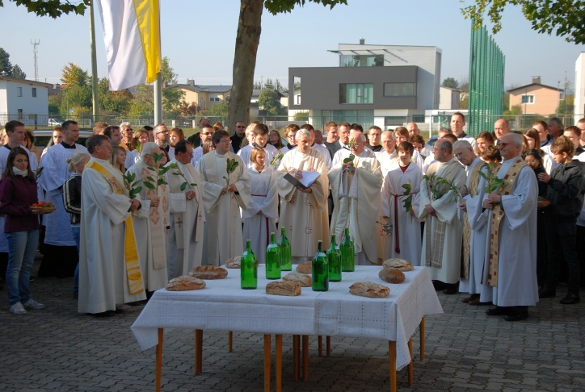
Video
Die "Karl Borromäus"-Glocke wird aufgezogen
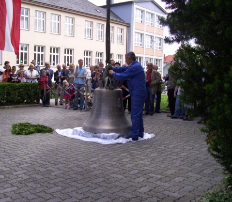